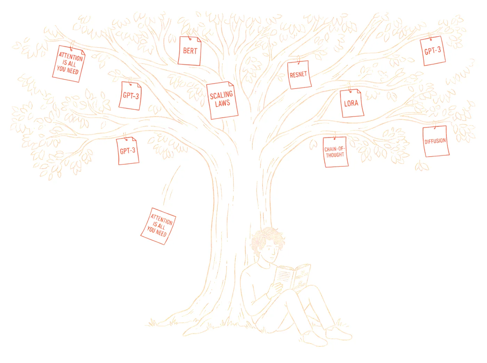

About
Building systems that make messy data useful.

I am a final-year Computer Engineering student at TED University in Ankara. My work sits around Machine Learning and Natural Language Processing: retrieval pipelines, model fine-tuning, and agent harnesses that put language models to work on real data rather than demos.
Most of what I build starts as a practical annoyance and ends as a tool I actually use - a retrievable university knowledge base, a resume-to-outreach pipeline, a prediction service that keeps itself current. Alongside coursework I run hands-on AI/ML workshops and help organize an LLM hackathon for students on campus.
- Languages
- Python, SQL, Java, PHP, JavaScript, C
- ML & Data
- PyTorch, scikit-learn, pandas, numpy, Hugging Face
- AI Systems
- LangChain, LangGraph, RAG pipelines, AI agents, MCP (Model Context Protocol), OpenAI API
- Tools
- Git, Power BI, Excel
Experience
Where I have worked.
Part-time AI engineering at Enocta, open-source research at Eschatia Labs, and internships across defense, enterprise AI, and robotics - mostly on the model side, always close to the data.
-
Aug 2026 - Present
Enocta
AI Engineer, part-time
Fine-tuning and agent-harness development for local language models; enterprise AI tooling including ElevenLabs. Joined as an AI intern (Aug - Sep 2026).
-
Present
Eschatia Labs
Independent Researcher
International open-source research lab building AI models, datasets, and papers - deepfake detection, multilingual decision models, local AI assistants, and language preservation with small models.
-
Jul 2026 - Aug 2026
OBSS 1st place
AI Intern
Built AI-powered applications; placed first in the internship-program competition.
-
Jun 2026 - Jul 2026
Aselsan
Intern
Benchmarked a local AI model and improved it with the collected data.
-
Jul 2025 - Aug 2025
Pulsar Robotik
Intern
AI-supported robot-arm automation (vision-language-action), computer vision quality control with SensoPart cameras.
Google Developer Groups On Campus TEDU - President. IAESTE TEDU - Board Member. Ran AI/ML hands-on workshops and organized an LLM hackathon.